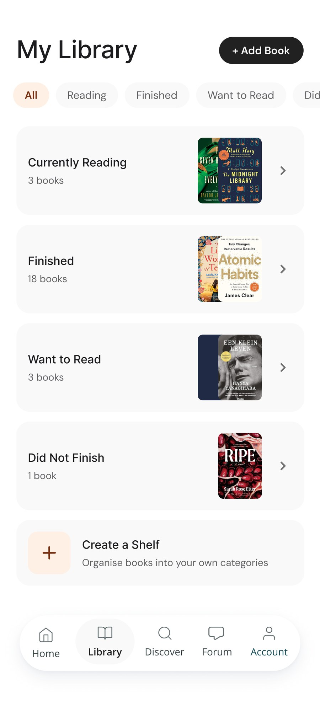
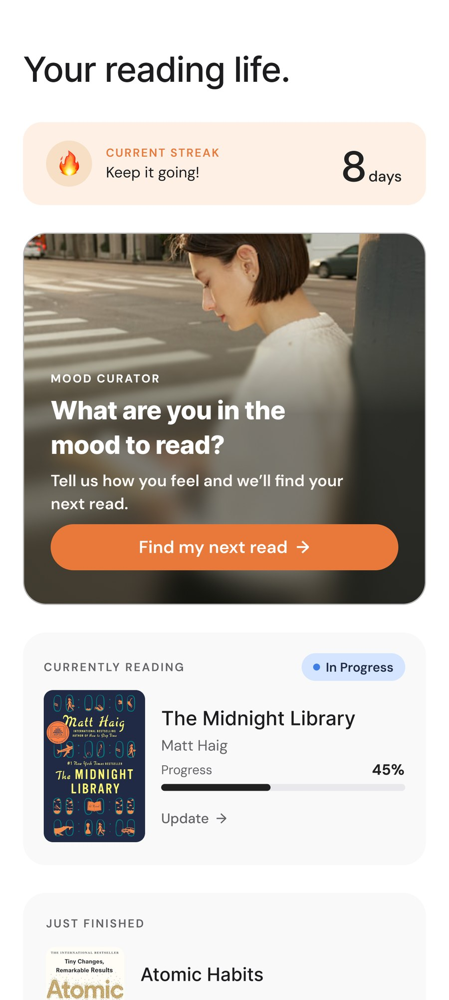
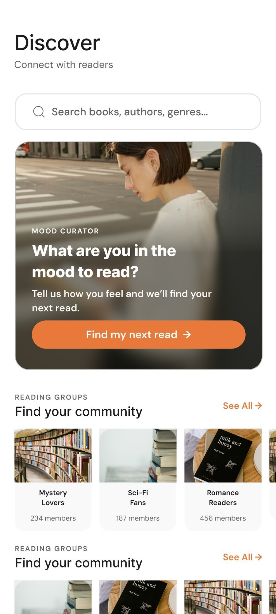
Wrylo · Personal book tracking app · 2025
A calmer way to track your reading
A personal reading tracker that suggests your next book by mood.
Context
Wrylo is a personal book tracking app. It brings everything about your reading into one calm place: what you are reading now, how far through you are, the streak you are keeping and what to pick up next.
I started Wrylo for two reasons: I wanted to build an app of my own from start to finish, and I wanted a better way to track my own reading.
At a glance
A calm place to track reading, and a smarter way to choose what is next.
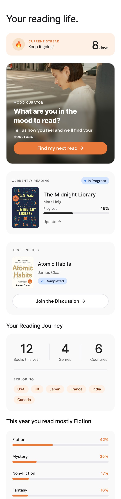
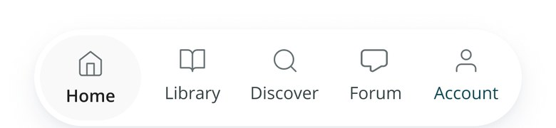
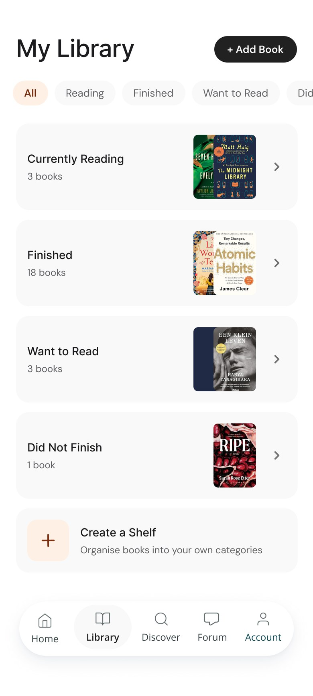
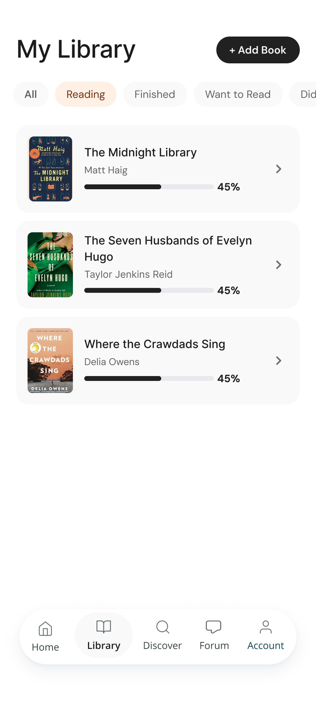
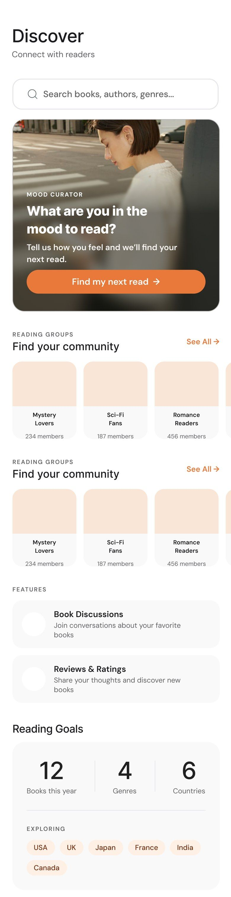
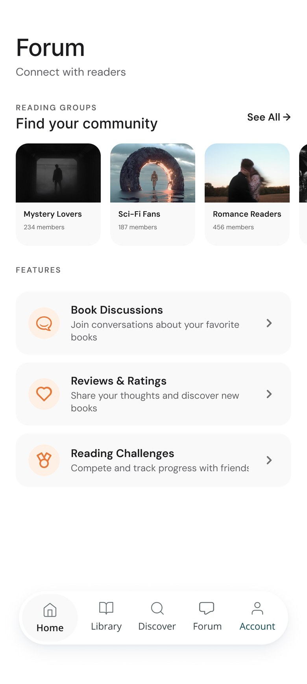
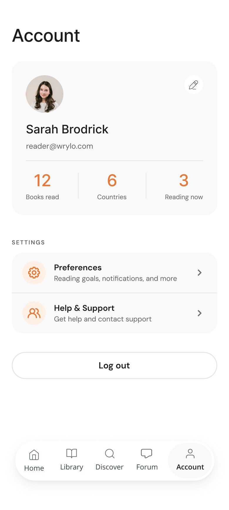
The problem
Tracking my reading was easy. Deciding what to read next was not.
I wanted one place to log my reading that could also help me decide what to read next, based on my mood rather than an endless list.
Research
Other apps log books well but rarely help you pick the next one.
Most reading apps focus on logging and reviews, with recommendations as an afterthought.
- Goodreads: huge catalogue, dated, recommends from past ratings
- Fable: social reading and book clubs first
- StoryGraph: rich stats and mood tags, but still long lists
- Bookly: timers and habits, little help choosing
- Wrylo keeps tracking simple and focuses on the next best read
Everyday reader
Reads a little most days and wants one calm place to keep track of it.
- Keep a reading streak going
- See progress on each book
- Find the next read by mood
Home
Home makes a few pages a day feel worth keeping up.
Home opens on what you are reading, your progress and your streak, so a few pages a day feels worth keeping up.
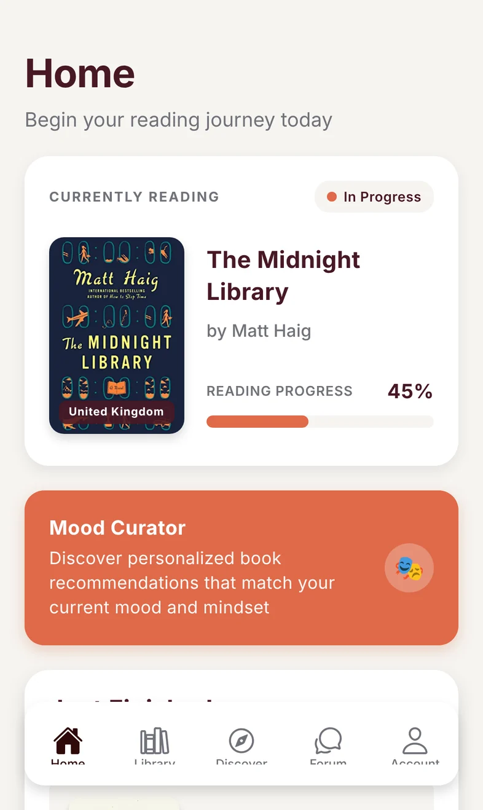
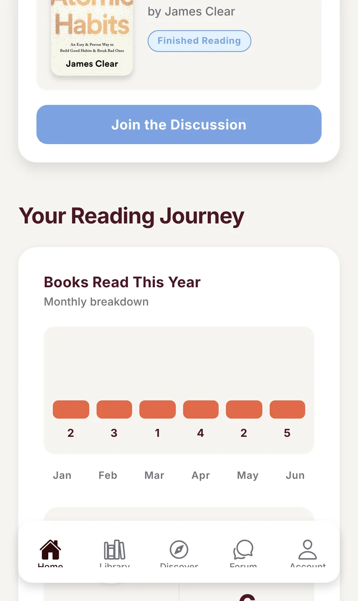
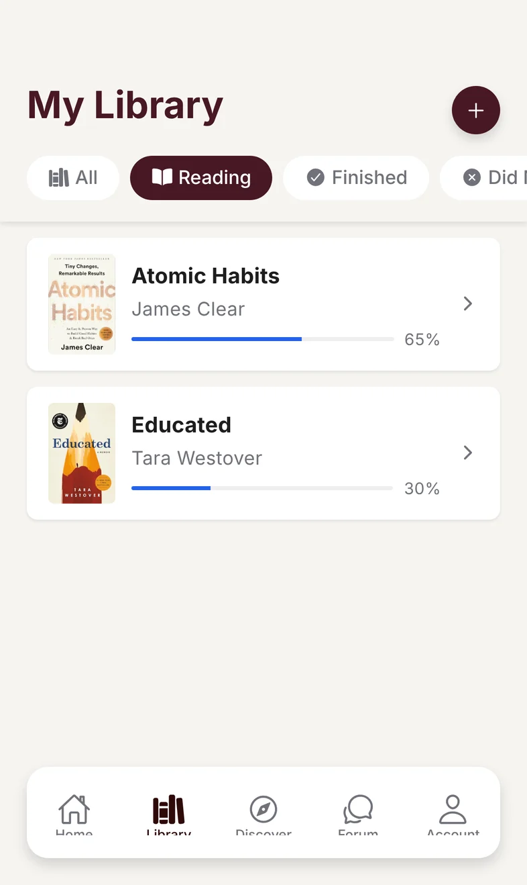
Mood curator
Three quick questions replace the endless list.
One question instead of an endless list: what are you in the mood to read?
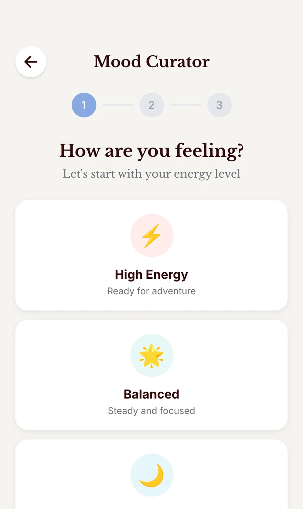
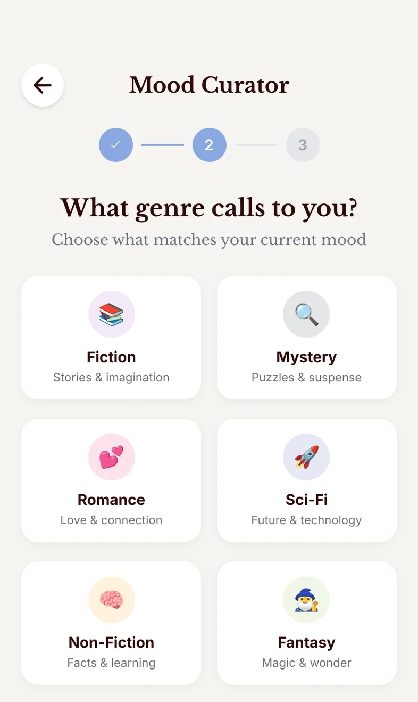
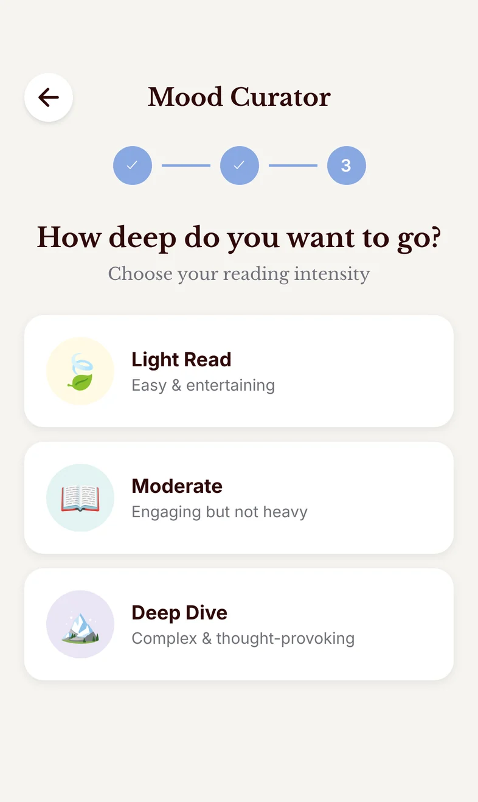
Structure
Five tabs keep everything one tap away.
Five tabs: Home, Library, Discover, Forum and Account.
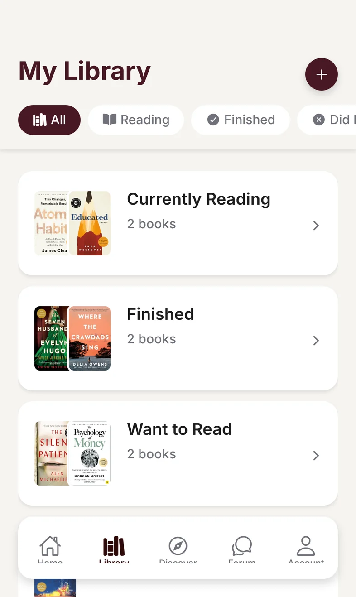
The reader’s journey
One reader, from signing up to choosing the next book.
- Signs up or logs in
- Sees Home and their streak
- Adds a book to Library
- Updates the page they are on
- Marks the book finished
- Shares thoughts in Forum
- Answers energy, genre, depth
- Saves a pick to Want to read
How it’s built
Designed and built end to end, by me.
Designed and built by me in React Native and Expo, with a Django API, the Google Books API and a small design system.
Neutrals
- Paper
#F6F4F1Page background - Surface
#FFFFFFCards and sheets - Ink
#1D1D1DBody text
Brand
- Burgundy
#3A1418Headings, primary actions - Coral
#E06A49Progress, Mood Curator
Interactive
- Primary
#7FABC7Links and focus - Secondary
#7F9BEBSteps and selection
Moods
- Happy
#FFE066 - Contemplative
#A78BFA - Adventurous
#4ECDC4 - Nostalgic
#FF6B9D
What genre calls to you?
Serif display · Libre Baskerville · Mood Curator titlesHome
Page title · Sans, bold, burgundyThe Midnight Library
Card title · Sans, semiboldBegin your reading journey today
Body · Sans, regularReading progress
Label · Sans, caps, trackedOutcome
Built and working, ready for its first readers.
Wrylo is fully built and working end to end, but it has not been launched to real users yet.
Reflections
What building it myself taught me.
I started Wrylo in 2025, when AI for building was still new. It has been a great way to learn what a product needs end to end.
- Reusable skills and a dedicated design system would have sped it up a lot
- Next time, I would set up the design system first